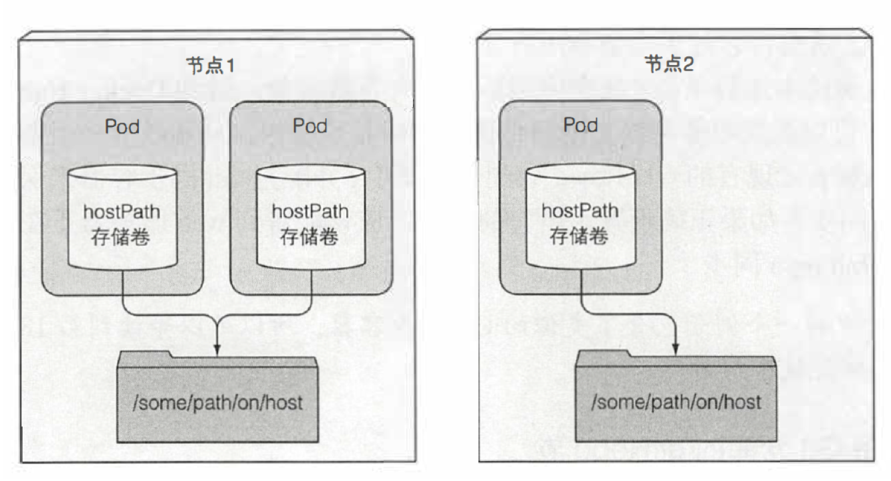
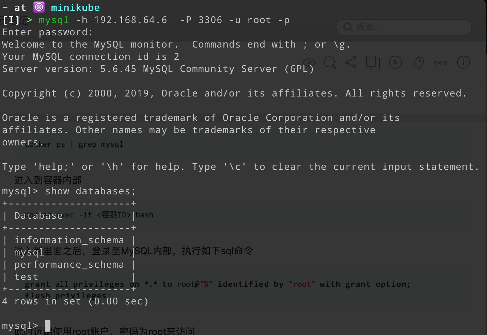

本节将会介绍如何在Kubernetes中部署（deployment）一个MySQL服务
Bugs
使用的官方MySQLv5.6镜像在部署的时候一开始也无法远程访问，需要自己手动额外设置！
环境参数
- 本地ip：192.168.43.205
- 使用k8s：Minikube v1.2.0
- k8s单节点ip：192.168.64.6
- 私服ip地址：192.168.43.205:5000
如何搭建私服在之前已经提到过了，这里就不再赘述
关于MySQL乱码的问题，在第5篇中会提到
将镜像推至私服
- 拉取镜像
1 | docker pull mysql:5.6 |
- 打上私服标签
1 | docker tag mysql:5.6 192.168.43.205:5000/mysql:5.6 |
- 推送至私服
1 | docker push 192.168.43.205:5000/mysql:5.6 |
为MySQL准备挂载卷
使用 PersistentVolume。由于实验环境为单节点的Kubernetes，所以使用 hostpath 类型

1 | # mysql-pv-hostpath.yaml |
创建该存储卷
1 | kubectl apply -f mysql-pv-hostpath.yaml |
创建一个 PersistentVolumeClaim ，提供给MySQL使用
1 | # mysql-pvc.yaml |
创建该存储卷声明
1 | kubectl apply -f mysql-pvc.yaml |
执行完毕后，查看是否成功创建
1 | kubectl get pv mysql-pv-hostpath |
输出如下
1 | NAME CAPACITY ACCESS MODES RECLAIM POLICY STATUS CLAIM STORAGECLASS REASON AGE |
此时发现， STATUS 与 CLAIM 表明该存储卷已经被存储卷声明 default/mysql-pv-claim 所使用的，再查看一下这个存储卷声明 mysql-pv-claim
1 | kubectl get pvc mysql-pv-claim |
输出如下
1 | NAME STATUS VOLUME CAPACITY ACCESS MODES STORAGECLASS AGE |
创建成功
创建MySQL实例
配置文件如下
1 | # mysql-deployment.yaml |
执行该配置文件
1 | kubectl apply -f mysql-deployment.yaml |
查看是否成功
1 | kubectl get pods |
一般情况下应该是可以创建成功的。注意，某些时候会出现配置的环境变量无效的情况，那么root的密码就为空
远程访问MySQL
首先先创建一个service向外暴露这个服务
1 | # mysql-service.yaml |
创建这个service，这样远端就可以通过 192.168.64.6:3306 来访问MySQL了
随后登录到mysql所在的节点，使用 docker exec 登录至MySQL容器中运行root用户远程访问
执行如下命令找到mysql容器的ID
1 | docker ps | grep mysql |
进入到容器内部
1 | docker exec -it <容器ID> bash |
进入到里面之后，登录(root账户可以用密码也可以不用密码)至MySQL内部，执行如下sql命令
1 | grant all privileges on *.* to root@"%" identified by "root" with grant option; |
此时远端使用root账户，密码为root来访问
在本地进行测试
1 | mysql -h 192.168.64.6 -P 3306 -u root -p |

如果不删除节点上 /mnt/data 中的内容，或者使用别的 PersistentVolumeClaim ，那么之后新创建的MySQL的Pod都会使用该配置信息
如果在Kubernetes集群内部，直接使用url mysql.default 登录即可
1 | # 服务名称.命名空间名称 |
自动化导入数据
MySQL官方镜像中根目录有一个目录 /docker-entrypoint-initdb.d ，MySQL启动时会加载启动的sql文件，所以可以为其编写一个Dockerfile打包成新的镜像
1 | FROM mysql:5.6 |